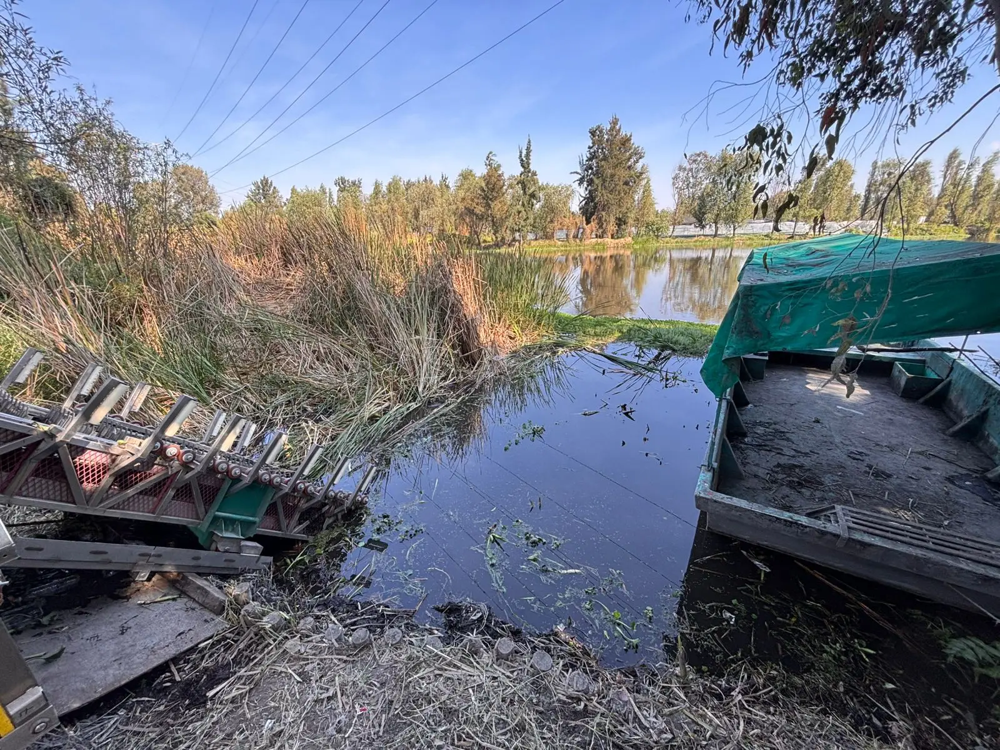
La innovación toma forma. El cambio, también.
Un sistema físico en desarrollo para recolectar residuos flotantes y transformar una acción ambiental en tecnología visible.
El impacto que no podemos ignorar
Detrás de cada residuo flotante existe un riesgo para nuestros cuerpos de agua, nuestras comunidades y nuestros ecosistemas. Conoce las consecuencias de la contaminación y por qué es necesario actuar.
Cada dato se atribuye a la fuente indicada; no son mediciones de Enjambre. Que una autoridad o un medio atribuya un efecto a la basura no equivale a demostrar una causa única: en las inundaciones intervienen también la lluvia y la infraestructura.
El problema es visible. La solución también puede serlo.
ENJAMBRE busca transformar la manera en que identificamos y recolectamos residuos flotantes, acercando tecnología e innovación a la recuperación de nuestros cuerpos de agua.
Conocer cómo funcionaUna respuesta física para residuos flotantes.
Enjambre desarrolla un sistema que dirige, captura, procesa y contiene material flotante mediante una secuencia visible de recolección. Busca convertir un problema disperso en un proceso físico y observable.
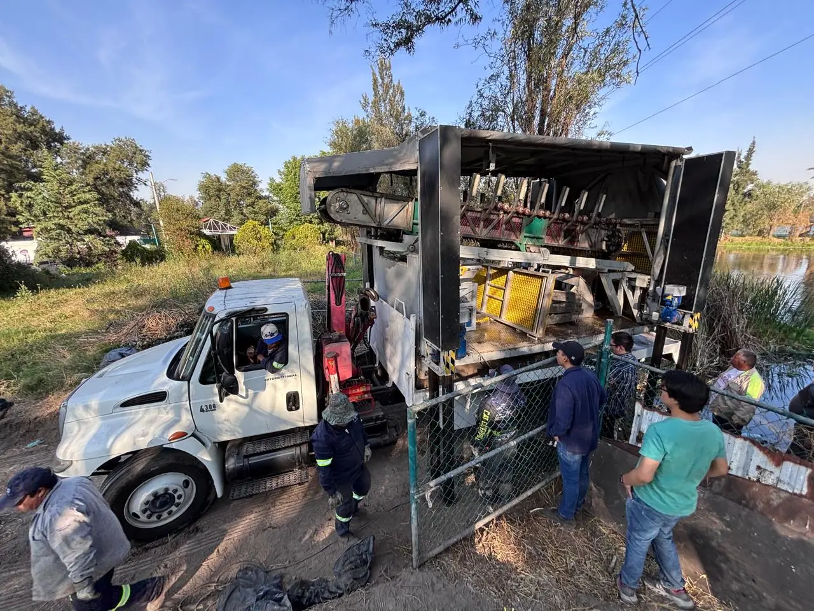
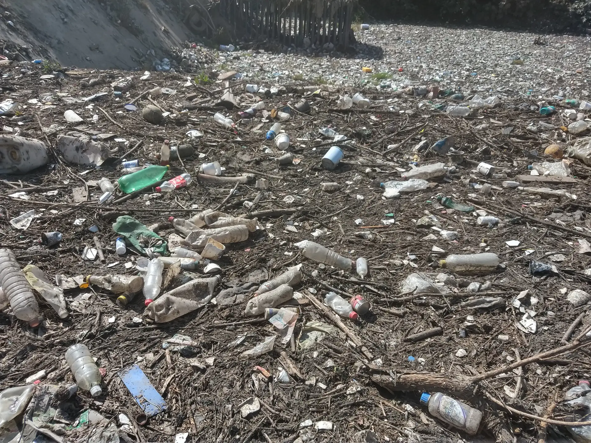
El residuo se mueve con el agua.
Se dispersa, se acumula y cambia con el entorno. Por eso enfrentar este problema exige más que recolección: exige entender el flujo, dirigir el material y convertirlo en una oportunidad de acción.
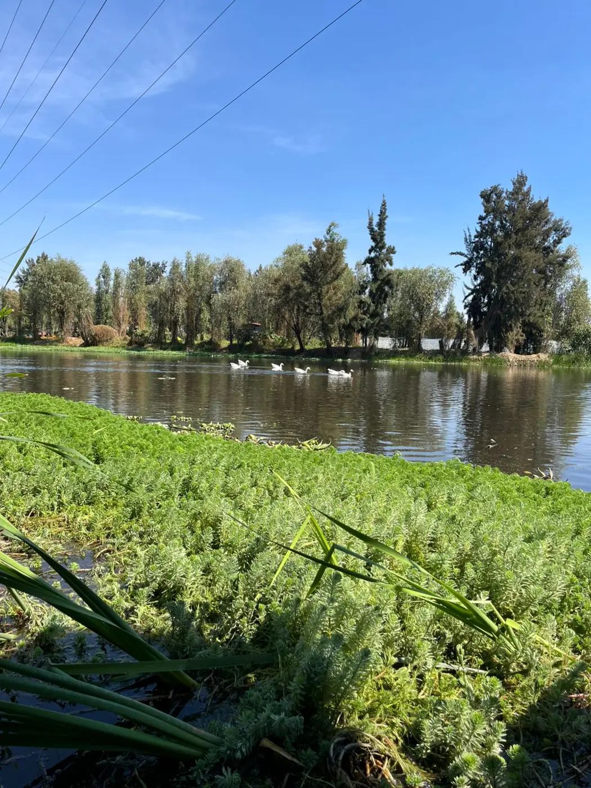
Del agua al sistema.
Enjambre convierte la recolección en una historia visual de cinco etapas.
Primero, el flujo se dirige.
El barco, controlado a distancia y sin necesidad de una persona a bordo, conduce los residuos flotantes hacia el sistema de captura.
El residuo sale del agua.
Un extractor inclinado, de cangilones, eleva el material flotante y lo lleva al siguiente punto del proceso.
El material avanza hacia el procesamiento.
Una banda transportadora lo lleva hacia la trituradora. Antes, el equipo retira manualmente metales y piedras que podrían dañarla.
El residuo se transforma.
El material pasa a una trituradora diseñada y fabricada por el equipo de ingeniería de Enjambre, que lo reduce antes de avanzar.
El resultado queda contenido.
Después de la trituración, el material se deposita en una zona de almacenamiento. Su gestión posterior depende de los acuerdos con cada entidad.
Así funciona el sistema real
Enjambre combina un barco a control remoto con un extractor de cangilones para sacar del agua los residuos flotantes. Aquí se resume lo que documenta el proyecto y se distingue qué es diseño, qué es prototipo y qué ya se probó.
Secuencia de operación
El barco dirige los residuos
▲ Prueba documentadaUn barco con las hélices fuera del agua, operado a control remoto, recorre el cuerpo de agua y usa su costado para arrastrar los residuos hacia el extractor.
El extractor los eleva
■ Prototipo fabricado y probadoUna cadena con cangilones recoge los residuos y los sube por una rampa inclinada, fuera del agua, hasta la plataforma.
Siguen hacia la plataforma
◌ Diseño en desarrolloEn el concepto «Todo en uno», una banda los lleva a una zona de selección manual y a un triturador que reduciría su volumen. Esta etapa aún no está confirmada como integrada y operativa.
Esquema ilustrativo, no a escala. Fuente: tesis de maestría en Ingeniería Mecánica (UNAM, 2023), capítulos 3 y 4.
Componentes
- Barco con propulsión aérea
- Sus motores eléctricos y hélices van fuera del agua. Así se evita que hierba, ramas o hilos enreden unas aspas sumergidas, algo crítico cuando nadie va a bordo para liberarlas. Se opera a control remoto.
- Hélices que giran y se pliegan
- Las hélices se orientan en dos posiciones de dirección, separadas 90°: navegación y recolección. Su estructura de tubos se pliega para guardar el barco dentro del sistema, porque desplegada puede medir hasta 1.5 m de alto y debe reducirse a menos de la mitad. En las pruebas documentadas, dos personas la pliegan y despliegan a mano.
- Extractor de cangilones
- Cangilones sujetos a una cadena suben los residuos por una rampa inclinada. En el diseño mide entre 4 y 8 m de largo, según el sitio. Se fabricó un prototipo y se probó, incluso en el embarcadero Cuemanco, en Xochimilco.
- Estructura, rampas y posiciones
- El sistema se traslada en un camión modificado. El extractor tiene una posición de trabajo, con la rampa hacia el agua, y una de guardado; el barco se ancla al extractor para desplegarse y para volver a guardarse (en una prueba documentada, el extractor lo «jaló» con eslingas hasta la posición de guardado).
Evidencia del desarrollo
- ◇ Modelo CAD diseño en computadora; no es una fotografía
- ■ Prototipo fabricado equipo construido
- ▲ Prueba documentada con fotos o video
- ◌ En desarrollo sin confirmar
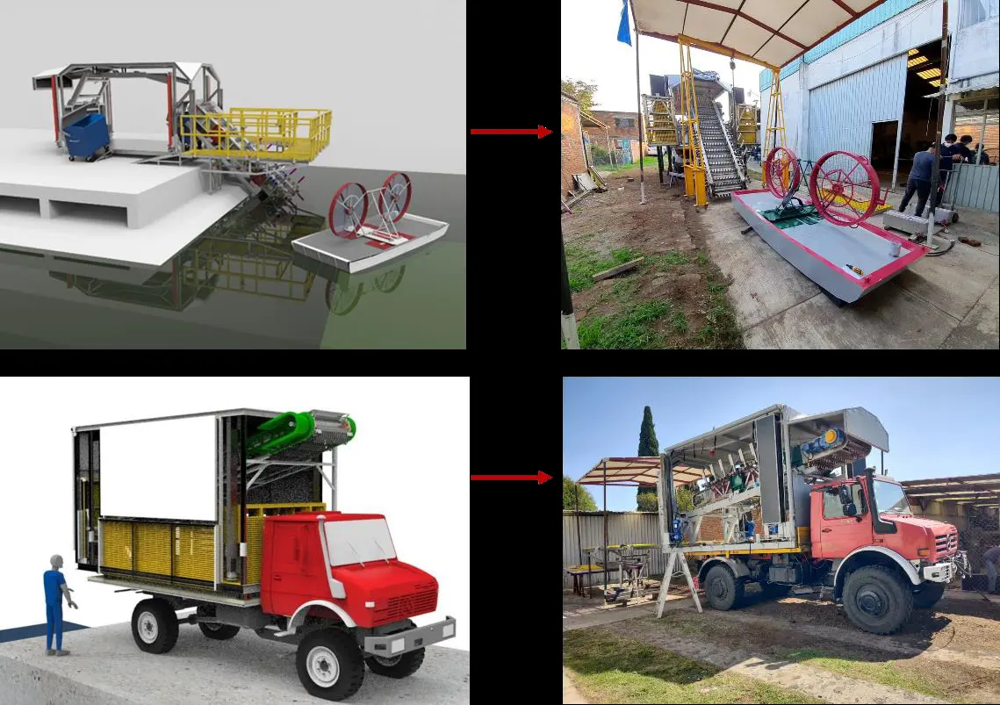
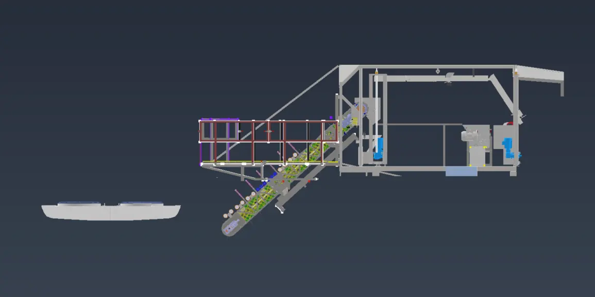
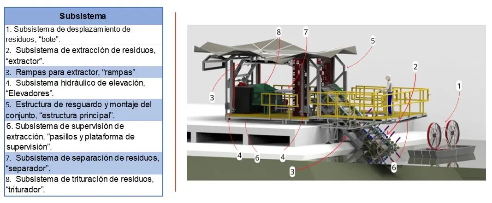
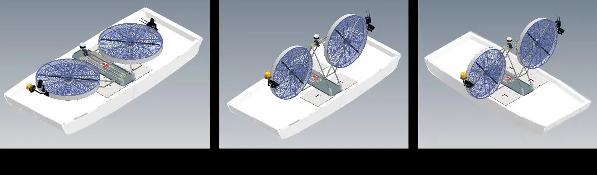
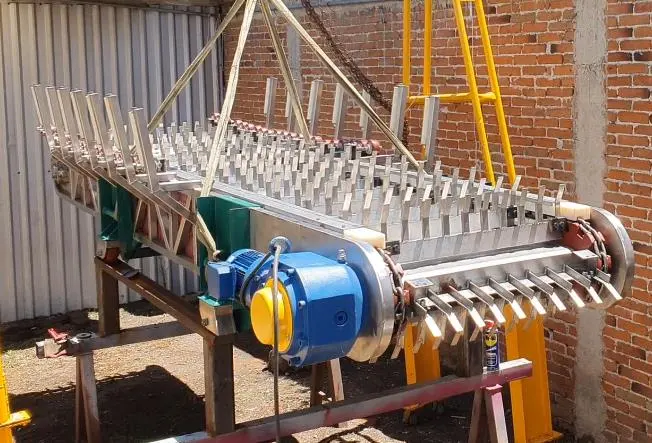
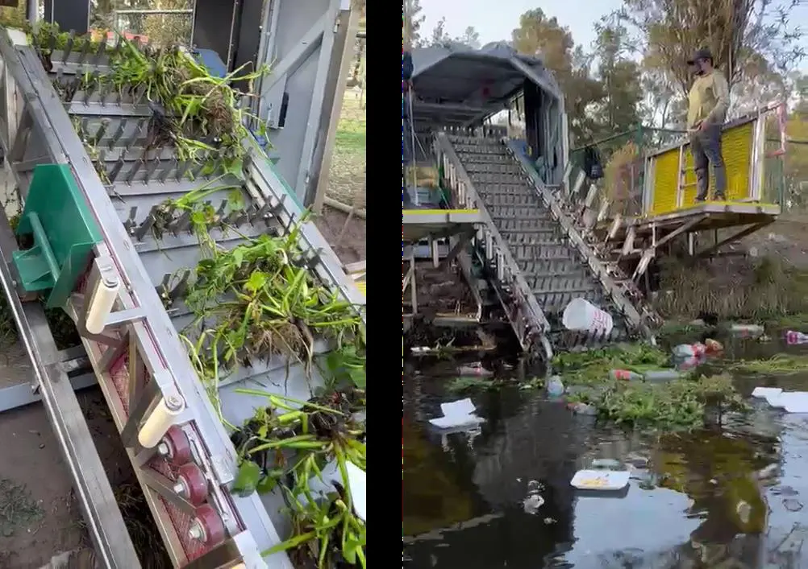
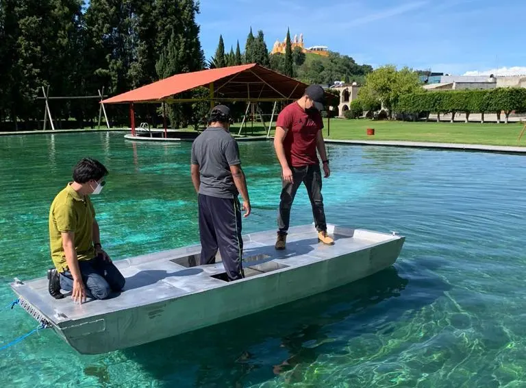
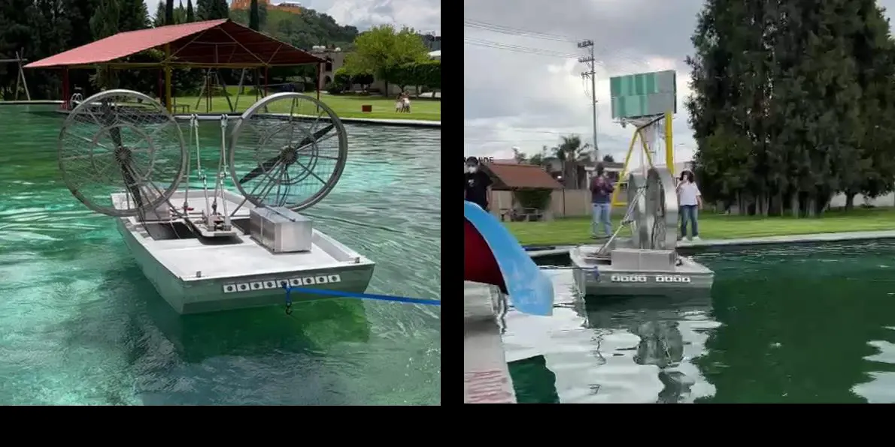
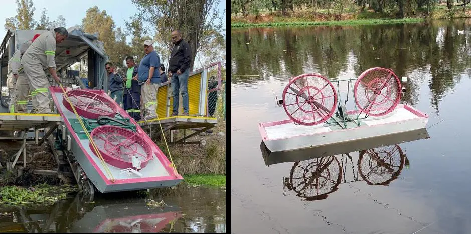
◌ En desarrollo o por confirmar
- Capacidad de extracción. La meta de diseño es del orden de 300 kg/h; es un valor prometido, no una capacidad demostrada. Falta medirla en pruebas.
- Triturador. Existe como modelo CAD y su objetivo es reducir el volumen de los residuos hasta en un 70 %; falta confirmar su integración y su operación.
- Separación y destino final. En el concepto la separación inicial es manual. El destino final de los residuos depende de cada material y de la gestión disponible.
- Sistema completo. La documentación revisada detalla a fondo el barco y el extractor; el resto de los subsistemas del «Todo en uno» sigue en desarrollo.
Contexto: residuos en los cuerpos de agua de la Ciudad de México
≈158 000 m³de residuos sólidos removidos y desazolvados en 2022 en ríos y cuerpos de agua de la Ciudad de México, según el Gobierno de la CDMX (cifra de 2022, citada en la tesis).
Para diseñar el sistema, el equipo visitó las 17 presas que opera el Sacmex. En promedio tienen 5 m de profundidad y casi todas una sola compuerta de drenaje, y acumulan basura mezclada con mucho material orgánico.
Por eso el proyecto busca un sistema adaptable a esas condiciones: transportable en camión, con hélices fuera del agua y un extractor cuya longitud se ajusta a cada sitio.
Fuentes y notas de validación
- Tesis de maestría en Ingeniería Mecánica (Diseño Mecánico), UNAM, 2023, proyecto SACMEX–UNAM. Capítulo 3 (contexto) y capítulo 4 (sistema «Todo en uno», extractor y barco). Imágenes: elaboración propia de la tesis.
- Cifra de 2022: Gobierno de la Ciudad de México, «Rescate de ríos y cuerpos de agua» (2022), citada en la tesis. Es un dato histórico, no una estadística actual.
- La hoja de cálculo del transportador (cangilones) contiene cálculos teóricos; no son mediciones y no se publican como capacidad.
- Los esquemas de esta sección son ilustrativos. Los modelos CAD no son fotografías de pruebas.
Vive el sistema Enjambre
Recorre las ocho etapas del sistema de forma interactiva: traslada el equipo, dirige el barco a control remoto hacia los residuos flotantes, sepáralos, tritúralos y prepáralos para su salida. Es una representación ilustrativa, sin registros ni datos personales.
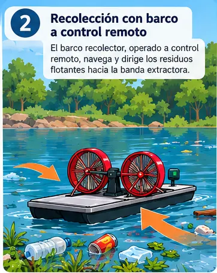
Tecnología ambiental en evolución.
Enjambre se concibe como un sistema «Todo en uno» de ocho subsistemas; hasta ahora el barco y el extractor son los más desarrollados y probados. Cada etapa abre espacio para validar desempeño, mejorar la operación y preparar futuras versiones.
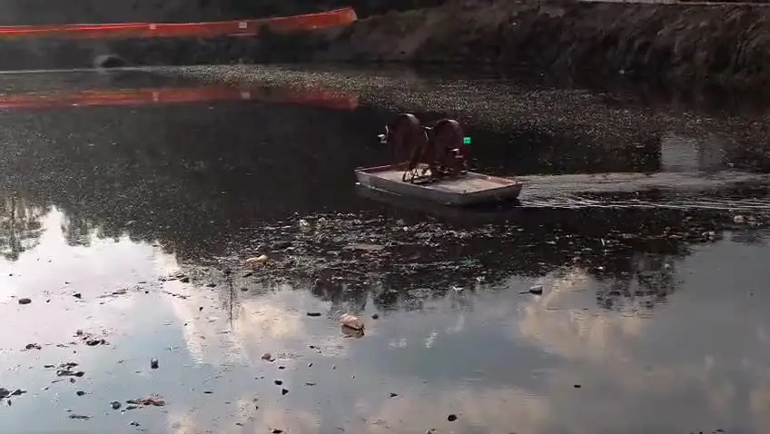
DirecciónBarco controlado a distancia.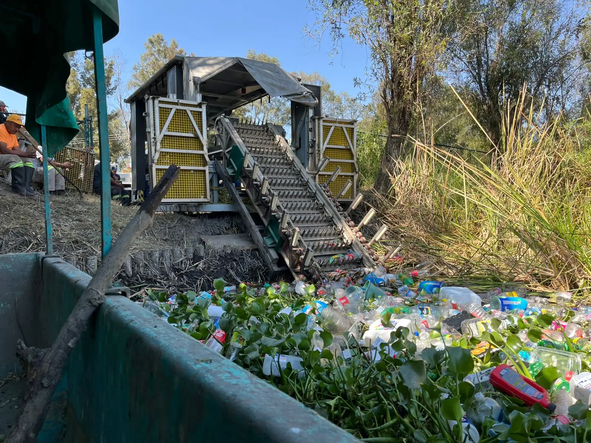
CapturaExtractor de cangilones sobre el agua.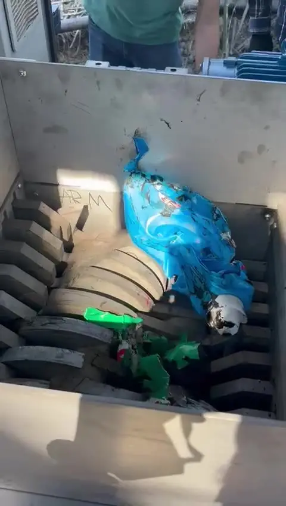
ProcesamientoTrituradora de diseño propio.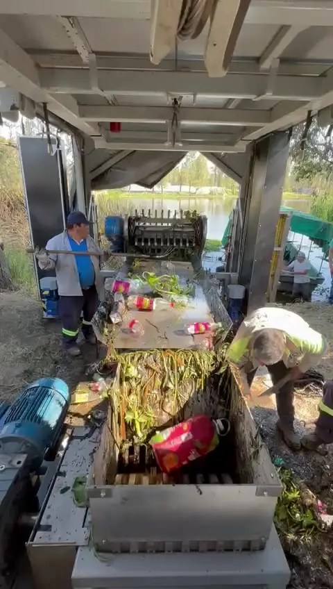
ContenciónZona de almacenamiento.
El diseño completo
Barco, extractor, rampas, elevadores, estructura principal, plataforma de supervisión, separador y triturador. El triturador existe como diseño CAD; su integración y operación aún se están confirmando.
En desarrollo
Mejoras en movilidad y maniobrabilidad del barco, y en su despliegue y plegado para facilitar el transporte.
Posible a futuro
Automatizar parcialmente la banda transportadora para reducir la intervención manual. No forma parte de la versión actual.
Datos técnicos en validación.
Hacer visible el cambio.
El potencial de Enjambre está en transformar un problema disperso en un proceso observable, medible y escalable conforme avance su desarrollo. El cambio comienza cuando el residuo deja de estar perdido en el agua y entra en un sistema que puede ser visto, medido y mejorado.
El cambio también necesita aliados.
Enjambre busca colaboración para fortalecer su desarrollo técnico, ampliar pruebas, validar impacto y construir nuevas oportunidades de implementación.
- Inversores
- Gobierno local
- Empresas con enfoque sostenible
- Aliados técnicos
Equipo de diseño
Cómo se conectan las áreas de trabajo
Cuerpos de agua de referencia en México
Donde puede comenzar el cambio. Explora cuerpos de agua de referencia en México. La presencia en el mapa no garantiza una intervención: cada lugar se revisa por condiciones técnicas, acceso, seguridad, permisos y necesidades locales.
Referencia oficial: capa «Cuerpos de agua» de CONAGUA. Cada sitio requiere evaluación técnica, operativa y de permisos antes de una intervención.
Hablemos del siguiente avance.
Si quieres conocer el proceso, explorar una alianza o apoyar el desarrollo de Enjambre, deja tus datos y el equipo podrá contactarte.